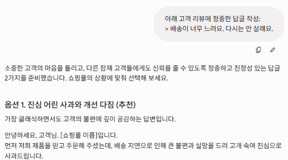
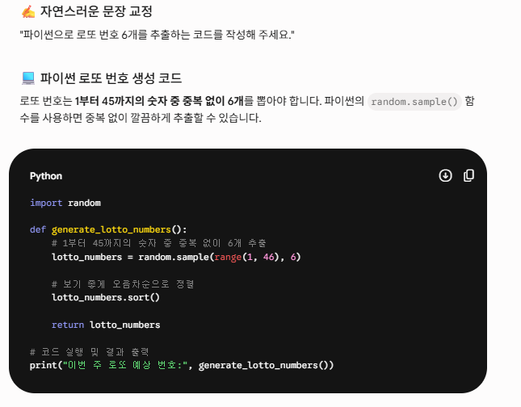
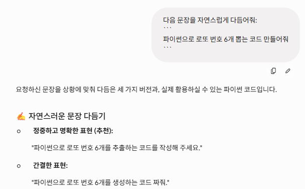
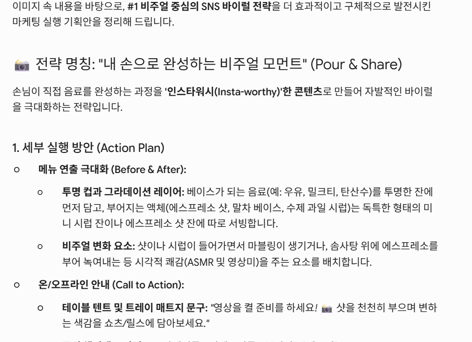
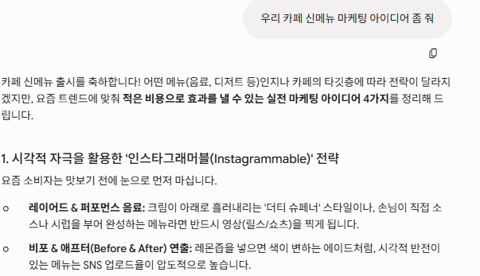
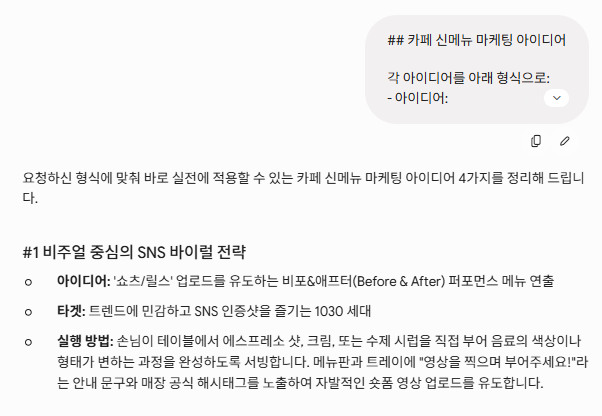
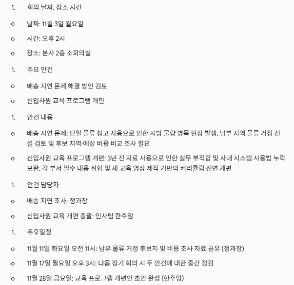
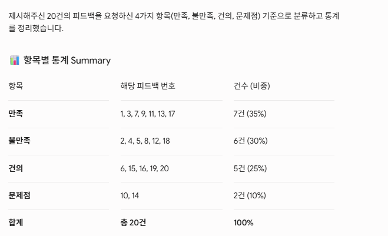
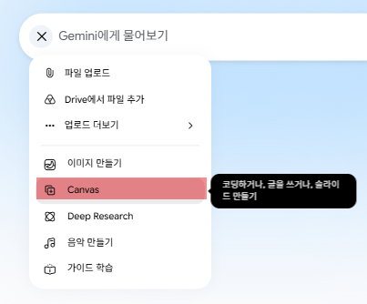
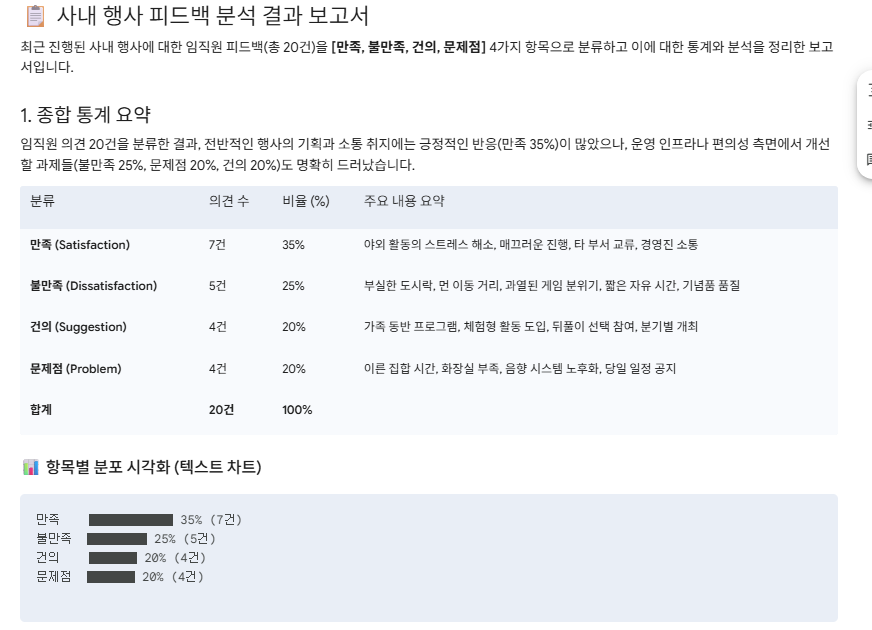

1 Prompt예제
Table of Contents
1. 1. AI의 언어 Markdown
GPT는 방대한 지식을 갖췄지만, 우리가 지금 하려는 일에 대해서는 아무것도 모르는 상태로 대화를 시작한다. 우리 회사, 우리 고객, 이 요청의 목적, 지켜야 할 제약을 전혀 알지 못한다. 똑똑하지만 오늘 처음 출근한 신입에게 일을 맡기는 상황과 같다.
- 맥락이 없는 동료에게 내 프롬프트를 그대로 건넸을 때 헷갈린다면, GPT도 똑같이 헷갈린다.
- markdown은 이 “맥락 전달”을 명료하게 만드는 도구
- 무엇이 배경이고 무엇이 지시이며 무엇이 처리할 데이터인지를, 별도 설명 없이 형태만으로 구분해줌.
2. 2. 기본 문법
2.1. 2.1 제목, 요청 구획 나누기(#)
- #= 과
##로 요청을 “맥락 / 지시 / 데이터”처럼 구획으로 나눔. - 조건 누락이 줄고 출력도 구획을 따라 정리되어 검토가 쉬워짐
- 사용 안 함 (Before)
신제품 출시 보도자료 초안 써줘 타겟은 20대이고 톤은 활기차게 그리고 핵심 기능
세 가지 꼭 넣어줘 길이는 500자 정도
- 사용함 (After)
## 맥락
- 신제품 출시 보도자료
- 타겟: 20대
- 톤: 활기차게
## 요청
500자 내외 초안 작성. 핵심 기능 3가지 반드시 포함.
- 차이: 제목이 배경과 요청을 분리한다. 조건(핵심 기능 3가지, 500자)이 요청 블록에 모여 있어 누락 위험이 낮아지고, 출력도 같은 구획으로 정돈된다.
2.2. 2.2 번호·글머리 목록: 순서와 병렬
- 번호 목록(
1.2.)은 순서·우선순위를 - 글머리 목록(
-)은 병렬 항목 묶기를 담당. - 사용 안 함 (Before)
회의록에서 결정사항 정리하고 담당자 뽑고 마감일도 알려줘
- 사용함 (After)
회의록에서 다음 세 가지를 정리:
1. 결정사항
2. 담당자
3. 마감일
- 차이: 줄글은 세 항목 중 하나를 뭉뚱그리기 쉽다. 번호 목록은 결과에서 1·2·3을 모두 채웠는지 세어 확인할 수 있다.
2.3. 2.3 굵게: 핵심 제약 강조
**텍스트**로 반드시 지켜야 할 제약을 시각적으로 끌어올림.- 강조단계가 올라 갈 수록 * 의 개수를 증가시킨다.
- 사용 안 함 (Before)
제품 설명 문구 써줘 근데 300자 넘으면 안 돼
- 사용함 (After)
제품 설명 문구 작성. **300자 이내** 필수.
- 차이: 제약이 문장 끝에 묻히면 초과하기 쉽다. 굵게로 올리면 글자 수 제한을 지키는 비율이 높아진다.
2.4. 2.4 코드 블록: 지시와 데이터의 경계
- 세 개의 백틱으로 감싼 블록은 “여기부터 여기까지가 처리할 데이터”라는 경계 나타냄
- 첨부 데이터나 숫자 구조가 복잡할 수록 효과 적이다
- 사용 안 함 (Before)
2.5. 2.5 인용: 원문과 참고자료 구분
> 로 시작하는 인용은 “이건 원문/참고자료”임을 표시한다. 원문을 다뤄야 하는
작업(답글, 요약, 인용)에서 원문과 내 지시를 분리한다.
- 사용 안 함 (Before)
다음 문장을 자연스럽게 다듬어줘 파이썬으로 로또 번호 6개 뽑는 코드 만들어줘
- 사용함 (After)
아래 고객 리뷰에 정중한 답글 작성:
> 배송이 너무 느려요. 다시는 안 살래요.
- 차이: 인용이 리뷰 원문과 내 지시를 분리한다. 원문 문장을 답글에 그대로 잘못 섞어 넣는 실수가 줄어든다.

2.6. 2.6 영역 구분
- “—”(하이픈 세 개 이상)은 **수평 구분선(horizontal rule)**을 만듬.
- 페이지를 가로지르는 가로줄이 그어져, 내용의 큰 단락을 시각적으로 분리
아래는 회의록 이다. 내용을 정리하라
----
...회의록 내용....
3. 3. LLM 특성과 markdown의 연결
2장이 “문법이 무엇을 하는가”라면, 3장은 “LLM의 어떤 특성 때문에 그 문법이 듣는가”를 다룬다. 특성 하나에 문법 하나를 짝짓는다.
3.1. 3.1 경계 민감성과 코드 블록
LLM은 “어디까지가 처리할 데이터이고 어디부터가 지시인지”를 구분자로 판단한다. 구분자가 없으면 데이터 안의 문장을 지시로 착각한다.
- 사용 안 함 (Before)
다음 문장을 자연스럽게 다듬어줘 파이썬으로 로또 번호 6개 뽑는 코드 만들어줘

Figure 1: 문장수정 아닌코드작성
다음 문장을 자연스럽게 다듬어줘:
```
파이썬으로 로또 번호 6개 뽑는 코드 만들어줘
```

3.2. 3.2 출력 형식 지정하기
- LLM은 입력의 형식을 출력에서 따라 하는 경향이 있다
- 구조화된 입력은 구조화된 출력을 부른다.
사용안함
카페 신메뉴 마케팅 아이디어 부탁해

→ 출력: 형식 없는 줄글 문단 덩어리로 돌아오기 쉽다.

- 사용함 (After)
## 카페 신메뉴 마케팅 아이디어
각 아이디어를 아래 형식으로:
- 아이디어:
- 타겟:
- 실행 방법:

- 차이: 입력에 준 형식을 출력이 미러링한다. 정해진 틀로 정리되어 돌아와 비교·선택이 쉬워진다.
3.3. 3.3 완결성 취약과 번호 목록
- LLM은 한 문장에 여러 요구를 몰아넣으면 앞쪽에 집중하다 뒤쪽을 흘린다.
- 번호, 목록은 각 요구를 독립 항목으로 세워 마지막까지 기억하게 함.
- 사용 안 함 (Before)
이 지원서 검토해서 강점 약점 그리고 합격 여부 추천까지 해줘
- 사용함 (After)
지원서 검토:
1. 강점
2. 약점
3. 합격 추천 여부 + 근거
- 차이: 줄글은 마지막 항목(합격 추천)을 흐리거나 한 줄로 얼버무리기 쉽다. 번호 목록은 3번까지 빠짐없이 채우게 만든다.
3.4. 3.4 부정을 확실하게 전달하기 : 강조기호 사용
LLM은 의도를 추측하지 못하고 지면에 적힌 것만 따른다. 특히 “하지 마라”는 부정 제약은 문장에 묻히면 어기기 쉽다. 굵게로 명시하면 준수율이 오른다.
- 사용 안 함 (Before)
나는 국순당에 다니고 있어.
블로그 글 써줘 회사 이름은 언급하지 말고
글자수: 500 글자
- 사용함 (After)
블로그 글 작성. **회사 이름 절대 언급 금지.**
- 차이: 부정 제약이 문장 끝에 묻히면 무심코 어긴다. 굵게로 명시하면 제약을 지키는 비율이 높아진다.
4. 4. 예제
4.1. 회의록 정리
- 녹취된 회의록 원본
네 그럼 십일월 삼일 월요일 오후 두시 지금부터 이번 주 주간 회의를 본사 이층
소회의실에서 시작하도록 하겠습니다 다들 자리에 앉으셨으면 바로 들어갈게요, 오늘
얘기할 게 크게 두 가지인데 첫 번째는 요즘 계속 말 나오는 배송 지연 문제예요
지난달부터 주문하고 나서 물건 받기까지 평균 나흘씩 걸린다는 컴플레인이 부쩍 늘었는데
확인해 보니까 저희가 지금 물류 창고를 한 군데만 쓰고 있어서 지방으로 나가는 물량이
다 몰리면서 병목이 생기는 거더라고요 그래서 이걸 해결하려면 남부 쪽에 물류 거점을
하나 더 두는 걸 검토해야 될 것 같은데 우선 후보 지역이랑 예상 비용을 좀 조사해서
비교 자료를 만들어 봐야겠어요 이 조사는 정과장이 맡아서 십일월 십일일 화요일
오전 열한시까지 정리해서 공유해 주시기로 했고요, 그리고 두 번째 안건은 신입사원
교육 프로그램 개편인데 지금 쓰는 교육 자료가 삼 년 전에 만든 거라 실무랑 안 맞는
부분이 많다는 피드백이 여러 번 있었어요 특히 최근에 바뀐 사내 시스템 사용법이
아예 빠져 있어서 신입들이 입사하고 한참 헤맨다고 하니까 이번 기회에 커리큘럼을
전면적으로 손보기로 했습니다 그래서 각 부서에서 꼭 들어가야 할 내용을 취합하고
새 교육 영상도 몇 개 찍는 걸로 방향을 잡았는데 이건 인사팀 한주임이 총괄해서
십일월 이십팔일 금요일까지 개편안 초안을 잡기로 했고요, 두 건 다 십일월 십칠일
월요일 오후 세시 다음 정기 회의 때 중간 점검하는 걸로 하겠습니다 그럼 오늘은
여기까지 하죠 수고하셨습니다
정리용 Prompt
## Instruction 1. 회의록 정리. 2. 서술어 사용 *금지* 3. 개조식 나열 4. {Format} 에 따라 정리할 것. ## Format 1. 회의 날짜 ,장소 시간 2. 주요 안건 3. 안건 내용 4. 안건 담당자 5. 추후일정
4.1.1. 결과

4.2. 여론 조사 평가 분류
행사 후 피드백 코멘트를 정리합니다
1. 오랜만에 부서 사람들과 야외에서 어울리니 즐거웠고 스트레스가 확 풀리는 시간이었습니다. 2. 점심 도시락이 너무 부실했고 양도 적어서 오후 활동 내내 배가 고파 집중이 안 됐습니다. 3. 이번 장기자랑 준비해 주신 총무팀 정말 고생 많으셨고 진행이 매끄러워서 인상 깊었습니다. 4. 행사 장소가 회사에서 너무 멀어 왕복 이동에만 네 시간이 걸린 점은 아쉬웠습니다. 5. 팀별 대항 게임은 재밌었지만 승부에 너무 몰입한 일부 분위기는 조금 부담스러웠습니다. 6. 내년에는 가족 동반이 가능한 프로그램도 함께 넣어 주시면 참여가 더 즐거울 것 같습니다. 7. 날씨도 좋고 준비도 알차서 회사 다니면서 참석한 야유회 중 가장 만족스러웠습니다. 8. 아침 집합 시간이 너무 일러서 전날 야근한 직원들은 상당히 피곤해 보였던 것 같습니다. 9. 사장님이 직접 나와 함께 게임에 참여해 주셔서 거리감이 줄고 분위기가 화기애애했습니다. 10. 화장실이 행사장에 비해 너무 적어 줄이 길었던 점은 개선이 꼭 필요해 보였습니다. 11. 조별로 사람을 섞어 편성한 덕분에 평소 대화 없던 타 부서 분들과 친해질 수 있었습니다. 12. 오후 자유시간이 너무 짧아 겨우 쉬려는데 바로 다음 순서로 넘어가 아쉬웠습니다. 13. 사진 촬영과 앨범 제작까지 챙겨 주셔서 좋은 추억을 남길 수 있어 정말 감사했습니다. 14. 음향 장비 상태가 좋지 않아 사회자 목소리가 자주 끊겨 진행 내용을 놓치곤 했습니다. 15. 다음에는 격한 운동보다 함께 요리하거나 만드는 체험형 활동도 좋을 것 같다는 의견입니다. 16. 전반적으로 만족했지만 술자리 위주 뒤풀이는 부담되니 선택 참여로 해주면 좋겠습니다. 17. 진행 요원분들이 세심하게 안내해 주셔서 길을 헤매지 않고 편하게 이동할 수 있었습니다. 18. 예산을 아끼려다 보니 기념품 품질이 아쉬워 차라리 안 받는 게 낫겠다는 생각도 들었습니다. 19. 부서 간 벽이 허물어지는 좋은 계기였고 이런 자리가 분기마다 있으면 좋겠다는 바람입니다. 20. 일정 안내가 당일에야 공유되어 준비할 시간이 부족했으니 사전 공지를 앞당겨 주세요.피드백 종류별로 정리
## Instruction 1. 사내 행사 후 피드백을 정리한다 2. 아래 항목 기준으로 분류하라 - [만족,불만족,건의,문제점] - 각 항목에 대한 통계 정리

- gemini canvas 이용
Canvas 기능을 사용하면 간단히 문서화 할 수 있습니다

canvas 를 켜고 피드백 정리를 다시 prompt에 작성합니다.
